Lists, and a complete example
Day 1: Afternoon, Session 2
Daniel Anderson
R Training: Florida State University, June 21, 2016
Lists
Elements of lists can be of any type, including lists
l <- list(
c("a", "b", "c"),
1:5,
rep(c(T,F), 7),
rnorm(3, 100, 25)
)
l
## [[1]]
## [1] "a" "b" "c"
##
## [[2]]
## [1] 1 2 3 4 5
##
## [[3]]
## [1] TRUE FALSE TRUE FALSE TRUE FALSE TRUE FALSE TRUE FALSE TRUE
## [12] FALSE TRUE FALSE
##
## [[4]]
## [1] 126.63506 124.25505 97.45927
Accessing List Elements
- List elements can be accessed in two methods: Using the
$with the element names, or through indexing with a double bracket[[]]. - If a single bracket index is used,
[], the element will be returned, but of type list.
typeof(l)
## [1] "list"
typeof(l[1])
## [1] "list"
typeof(l[[1]])
## [1] "character"
l[1]
## [[1]]
## [1] "a" "b" "c"
l[[1]]
## [1] "a" "b" "c"
Access list elements via names
Provide element names
names(l) <- c("letters", "numbers", "logical", "double")
str(l)
## List of 4
## $ letters: chr [1:3] "a" "b" "c"
## $ numbers: int [1:5] 1 2 3 4 5
## $ logical: logi [1:14] TRUE FALSE TRUE FALSE TRUE FALSE ...
## $ double : num [1:3] 126.6 124.3 97.5
Access element
l$letters
## [1] "a" "b" "c"
Naming lists versus vectors
Lists
lst <- list(1:5, letters[1:15])
str(lst)
## List of 2
## $ : int [1:5] 1 2 3 4 5
## $ : chr [1:15] "a" "b" "c" "d" ...
names(lst) <- c("Numbers", "Letters")
str(lst)
## List of 2
## $ Numbers: int [1:5] 1 2 3 4 5
## $ Letters: chr [1:15] "a" "b" "c" "d" ...
Vectors
v <- lst[[1]]
names(v) <- c("One", "Two",
"Three", "Four", "Five")
v
## One Two Three Four Five
## 1 2 3 4 5
names(lst$Numbers) <- c("One", "Two", "Three", "Four", "Five")
lst
## $Numbers
## One Two Three Four Five
## 1 2 3 4 5
##
## $Letters
## [1] "a" "b" "c" "d" "e" "f" "g" "h" "i" "j" "k" "l" "m" "n" "o"
Subsetting
lst$Numbers["Three"]
## Three
## 3
Lists returned by functions
- We'll talk about this more when we get into functions (next week), but many
functions return a list of objects. For example:
lm.
mod <- lm(hp ~ mpg, data = mtcars)
str(mod)
## List of 12
## $ coefficients : Named num [1:2] 324.08 -8.83
## ..- attr(*, "names")= chr [1:2] "(Intercept)" "mpg"
## $ residuals : Named num [1:32] -28.7 -28.7 -29.8 -25.1 16 ...
## ..- attr(*, "names")= chr [1:32] "Mazda RX4" "Mazda RX4 Wag" "Datsun 710" "Hornet 4 Drive" ...
## $ effects : Named num [1:32] -829.8 296.3 -23.6 -20 19.3 ...
## ..- attr(*, "names")= chr [1:32] "(Intercept)" "mpg" "" "" ...
## $ rank : int 2
## $ fitted.values: Named num [1:32] 139 139 123 135 159 ...
## ..- attr(*, "names")= chr [1:32] "Mazda RX4" "Mazda RX4 Wag" "Datsun 710" "Hornet 4 Drive" ...
## $ assign : int [1:2] 0 1
## $ qr :List of 5
## ..$ qr : num [1:32, 1:2] -5.657 0.177 0.177 0.177 0.177 ...
## .. ..- attr(*, "dimnames")=List of 2
## .. .. ..$ : chr [1:32] "Mazda RX4" "Mazda RX4 Wag" "Datsun 710" "Hornet 4 Drive" ...
## .. .. ..$ : chr [1:2] "(Intercept)" "mpg"
## .. ..- attr(*, "assign")= int [1:2] 0 1
## ..$ qraux: num [1:2] 1.18 1.02
## ..$ pivot: int [1:2] 1 2
## ..$ tol : num 1e-07
## ..$ rank : int 2
## ..- attr(*, "class")= chr "qr"
## $ df.residual : int 30
## $ xlevels : Named list()
## $ call : language lm(formula = hp ~ mpg, data = mtcars)
## $ terms :Classes 'terms', 'formula' language hp ~ mpg
## .. ..- attr(*, "variables")= language list(hp, mpg)
## .. ..- attr(*, "factors")= int [1:2, 1] 0 1
## .. .. ..- attr(*, "dimnames")=List of 2
## .. .. .. ..$ : chr [1:2] "hp" "mpg"
## .. .. .. ..$ : chr "mpg"
## .. ..- attr(*, "term.labels")= chr "mpg"
## .. ..- attr(*, "order")= int 1
## .. ..- attr(*, "intercept")= int 1
## .. ..- attr(*, "response")= int 1
## .. ..- attr(*, ".Environment")=<environment: R_GlobalEnv>
## .. ..- attr(*, "predvars")= language list(hp, mpg)
## .. ..- attr(*, "dataClasses")= Named chr [1:2] "numeric" "numeric"
## .. .. ..- attr(*, "names")= chr [1:2] "hp" "mpg"
## $ model :'data.frame': 32 obs. of 2 variables:
## ..$ hp : num [1:32] 110 110 93 110 175 105 245 62 95 123 ...
## ..$ mpg: num [1:32] 21 21 22.8 21.4 18.7 18.1 14.3 24.4 22.8 19.2 ...
## ..- attr(*, "terms")=Classes 'terms', 'formula' language hp ~ mpg
## .. .. ..- attr(*, "variables")= language list(hp, mpg)
## .. .. ..- attr(*, "factors")= int [1:2, 1] 0 1
## .. .. .. ..- attr(*, "dimnames")=List of 2
## .. .. .. .. ..$ : chr [1:2] "hp" "mpg"
## .. .. .. .. ..$ : chr "mpg"
## .. .. ..- attr(*, "term.labels")= chr "mpg"
## .. .. ..- attr(*, "order")= int 1
## .. .. ..- attr(*, "intercept")= int 1
## .. .. ..- attr(*, "response")= int 1
## .. .. ..- attr(*, ".Environment")=<environment: R_GlobalEnv>
## .. .. ..- attr(*, "predvars")= language list(hp, mpg)
## .. .. ..- attr(*, "dataClasses")= Named chr [1:2] "numeric" "numeric"
## .. .. .. ..- attr(*, "names")= chr [1:2] "hp" "mpg"
## - attr(*, "class")= chr "lm"
You can access the elements through the list
mod$coefficients
## (Intercept) mpg
## 324.082314 -8.829731
Note that some times there are more efficient methods
coef(mod)
## (Intercept) mpg
## 324.082314 -8.829731
In this case the methods are roughly equivalent, but sometimes it can make a difference (IRT)
Other functions will transform data into lists
cyls <- split(mtcars, mtcars$cyl)
str(cyls)
## List of 3
## $ 4:'data.frame': 11 obs. of 11 variables:
## ..$ mpg : num [1:11] 22.8 24.4 22.8 32.4 30.4 33.9 21.5 27.3 26 30.4 ...
## ..$ cyl : num [1:11] 4 4 4 4 4 4 4 4 4 4 ...
## ..$ disp: num [1:11] 108 146.7 140.8 78.7 75.7 ...
## ..$ hp : num [1:11] 93 62 95 66 52 65 97 66 91 113 ...
## ..$ drat: num [1:11] 3.85 3.69 3.92 4.08 4.93 4.22 3.7 4.08 4.43 3.77 ...
## ..$ wt : num [1:11] 2.32 3.19 3.15 2.2 1.61 ...
## ..$ qsec: num [1:11] 18.6 20 22.9 19.5 18.5 ...
## ..$ vs : num [1:11] 1 1 1 1 1 1 1 1 0 1 ...
## ..$ am : num [1:11] 1 0 0 1 1 1 0 1 1 1 ...
## ..$ gear: num [1:11] 4 4 4 4 4 4 3 4 5 5 ...
## ..$ carb: num [1:11] 1 2 2 1 2 1 1 1 2 2 ...
## $ 6:'data.frame': 7 obs. of 11 variables:
## ..$ mpg : num [1:7] 21 21 21.4 18.1 19.2 17.8 19.7
## ..$ cyl : num [1:7] 6 6 6 6 6 6 6
## ..$ disp: num [1:7] 160 160 258 225 168 ...
## ..$ hp : num [1:7] 110 110 110 105 123 123 175
## ..$ drat: num [1:7] 3.9 3.9 3.08 2.76 3.92 3.92 3.62
## ..$ wt : num [1:7] 2.62 2.88 3.21 3.46 3.44 ...
## ..$ qsec: num [1:7] 16.5 17 19.4 20.2 18.3 ...
## ..$ vs : num [1:7] 0 0 1 1 1 1 0
## ..$ am : num [1:7] 1 1 0 0 0 0 1
## ..$ gear: num [1:7] 4 4 3 3 4 4 5
## ..$ carb: num [1:7] 4 4 1 1 4 4 6
## $ 8:'data.frame': 14 obs. of 11 variables:
## ..$ mpg : num [1:14] 18.7 14.3 16.4 17.3 15.2 10.4 10.4 14.7 15.5 15.2 ...
## ..$ cyl : num [1:14] 8 8 8 8 8 8 8 8 8 8 ...
## ..$ disp: num [1:14] 360 360 276 276 276 ...
## ..$ hp : num [1:14] 175 245 180 180 180 205 215 230 150 150 ...
## ..$ drat: num [1:14] 3.15 3.21 3.07 3.07 3.07 2.93 3 3.23 2.76 3.15 ...
## ..$ wt : num [1:14] 3.44 3.57 4.07 3.73 3.78 ...
## ..$ qsec: num [1:14] 17 15.8 17.4 17.6 18 ...
## ..$ vs : num [1:14] 0 0 0 0 0 0 0 0 0 0 ...
## ..$ am : num [1:14] 0 0 0 0 0 0 0 0 0 0 ...
## ..$ gear: num [1:14] 3 3 3 3 3 3 3 3 3 3 ...
## ..$ carb: num [1:14] 2 4 3 3 3 4 4 4 2 2 ...
More on lists
- Note that previously slide looked like a nested list (list inside a list). This is because data frames are lists, where each element of the list is a vector of the same length.
- lists are tremendously useful and flexible, but essentially require at least
a basic understanding of functions and/or loops.
- Functions because lists are often used to return output from a function (as discussed previously).
- Loops because you often want to loop through a list and apply a function to each element of the list.
For example:
sapply(cyls, function(x) cor(x$mpg, x$hp))
## 4 6 8
## -0.5235034 -0.1270678 -0.2836357
(Note tapply is a more efficient method for doing the same thing as above
without splitting the data frame first)
Lists and data frames
l <- list(
lets = letters[1:5],
ints = 9:5,
dbl = rnorm(5, 12, 0.75)
)
str(l)
## List of 3
## $ lets: chr [1:5] "a" "b" "c" "d" ...
## $ ints: int [1:5] 9 8 7 6 5
## $ dbl : num [1:5] 13.1 10.7 12.5 11.6 13
as.data.frame(l)
## lets ints dbl
## 1 a 9 13.05240
## 2 b 8 10.66742
## 3 c 7 12.46715
## 4 d 6 11.60829
## 5 e 5 12.99167
Or equivalently
dframe <- data.frame(
lets = letters[1:5],
ints = 9:5,
dbl = rnorm(5, 12, 0.75)
)
dframe
## lets ints dbl
## 1 a 9 11.72742
## 2 b 8 12.98930
## 3 c 7 12.03283
## 4 d 6 10.59101
## 5 e 5 11.66470
More on data frames
Because data frames are actually lists, you can use the same subsetting procedures you can with lists.
dframe[2]
## ints
## 1 9
## 2 8
## 3 7
## 4 6
## 5 5
dframe[[2]]
## [1] 9 8 7 6 5
Complete applied (but very simple) example
Goals
Come up from the weeds a bit
- Go through a complete (basic) example
- process, plot, analyze, plot
- Look at correlations
- Explore linear regression and multilevel modeling (briefly)
Load Data
High School and Beyond
library(haven)
hsb <- read_spss("./data/HSB.sav")
head(hsb)
## id minority female ses mathach
## 1 1224 0 1 -1.528 5.876
## 2 1224 0 1 -0.588 19.708
## 3 1224 0 0 -0.528 20.349
## 4 1224 0 0 -0.668 8.781
## 5 1224 0 0 -0.158 17.898
## 6 1224 0 0 0.022 4.583
About the HSB data
Our data file is a subsample from the 1982 High School and Beyond Survey and is used extensively in Hierarchical Linear Models by Raudenbush and Bryk. The data file, called hsb, consists of 7185 students nested in 160 schools. The outcome variable of interest is the student-level (level 1) math achievement score (mathach). The variable ses is the socio-economic status of a student and therefore is at the student level. The variable meanses is the group-mean centered version of ses and therefore is at the school level (level 2). The variable sector is an indicator variable indicating if a school is public or catholic and is therefore a school-level variable. There are 90 public schools (sector=0) and 70 catholic schools (sector=1) in the sample.
Description from
http://www.ats.ucla.edu/stat/hlm/seminars/hlm_mlm/608/mlm_hlm_seminar_v608.htm
Check out the data a bit
summary(hsb)
## id minority female ses
## Length:7185 Min. :0.0000 Min. :0.0000 Min. :-3.758000
## Class :character 1st Qu.:0.0000 1st Qu.:0.0000 1st Qu.:-0.538000
## Mode :character Median :0.0000 Median :1.0000 Median : 0.002000
## Mean :0.2747 Mean :0.5282 Mean : 0.000143
## 3rd Qu.:1.0000 3rd Qu.:1.0000 3rd Qu.: 0.602000
## Max. :1.0000 Max. :1.0000 Max. : 2.692000
## mathach
## Min. :-2.832
## 1st Qu.: 7.275
## Median :13.131
## Mean :12.748
## 3rd Qu.:18.317
## Max. :24.993
Evaluate the structure of the data
str(hsb)
## Classes 'tbl_df', 'tbl' and 'data.frame': 7185 obs. of 5 variables:
## $ id : chr "1224" "1224" "1224" "1224" ...
## $ minority: num 0 0 0 0 0 0 0 0 0 0 ...
## $ female : num 1 1 0 0 0 0 1 0 1 0 ...
## $ ses : num -1.528 -0.588 -0.528 -0.668 -0.158 ...
## $ mathach : num 5.88 19.71 20.35 8.78 17.9 ...
What is this ses variable?
"a standardized scale constructed from variables measuring parental education, occupation, and income" (http://www.upa.pdx.edu/IOA/newsom/mlrclass/ho_hsb.pdf)
So why doesn't it have a sd of 1?
sd(hsb$ses)
## [1] 0.7793552
Our dataset is a sample from the full dataset. So you can still interpret a 1
unit change in the ses variable as a one standard deviation increase in the
population.
Evaluate id
table(hsb$id)
##
## 1224 1288 1296 1308 1317 1358 1374 1433 1436 1461 1462 1477 1499 1637 1906
## 47 25 48 20 48 30 28 35 44 33 57 62 53 27 53
## 1909 1942 1946 2030 2208 2277 2305 2336 2458 2467 2526 2626 2629 2639 2651
## 28 29 39 47 60 61 67 47 57 52 57 38 57 42 38
## 2655 2658 2755 2768 2771 2818 2917 2990 2995 3013 3020 3039 3088 3152 3332
## 52 45 47 25 55 42 43 48 46 53 59 21 39 52 38
## 3351 3377 3427 3498 3499 3533 3610 3657 3688 3705 3716 3838 3881 3967 3992
## 39 45 49 53 38 48 64 51 43 45 41 54 41 52 53
## 3999 4042 4173 4223 4253 4292 4325 4350 4383 4410 4420 4458 4511 4523 4530
## 46 64 44 45 58 65 53 33 25 41 32 48 58 47 63
## 4642 4868 4931 5192 5404 5619 5640 5650 5667 5720 5761 5762 5783 5815 5819
## 61 34 58 28 57 66 57 45 61 53 52 37 29 25 50
## 5838 5937 6074 6089 6144 6170 6291 6366 6397 6415 6443 6464 6469 6484 6578
## 31 29 56 33 43 21 35 58 60 54 30 29 57 35 56
## 6600 6808 6816 6897 6990 7011 7101 7172 7232 7276 7332 7341 7342 7345 7364
## 56 44 55 49 53 33 28 44 52 53 48 51 58 56 44
## 7635 7688 7697 7734 7890 7919 8009 8150 8165 8175 8188 8193 8202 8357 8367
## 51 54 32 22 51 37 47 44 49 33 30 43 35 27 14
## 8477 8531 8627 8628 8707 8775 8800 8854 8857 8874 8946 8983 9021 9104 9158
## 37 41 53 61 48 48 32 32 64 36 58 51 56 55 53
## 9198 9225 9292 9340 9347 9359 9397 9508 9550 9586
## 31 36 19 29 57 53 47 35 29 59
Create new Student ID
Method 1
Use the rownames
hsb$SID <- rownames(hsb)
head(hsb)
## id minority female ses mathach SID
## 1 1224 0 1 -1.528 5.876 1
## 2 1224 0 1 -0.588 19.708 2
## 3 1224 0 0 -0.528 20.349 3
## 4 1224 0 0 -0.668 8.781 4
## 5 1224 0 0 -0.158 17.898 5
## 6 1224 0 0 0.022 4.583 6
Method 2
Use some other arbitrary index
hsb$SID <- seq(from = 100,
length.out = nrow(hsb), by = 8)
head(hsb)
## id minority female ses mathach SID
## 1 1224 0 1 -1.528 5.876 100
## 2 1224 0 1 -0.588 19.708 108
## 3 1224 0 0 -0.528 20.349 116
## 4 1224 0 0 -0.668 8.781 124
## 5 1224 0 0 -0.158 17.898 132
## 6 1224 0 0 0.022 4.583 140
Rename id variable to ScID
names(hsb)
## [1] "id" "minority" "female" "ses" "mathach" "SID"
names(hsb)[1] <- "ScID"
head(hsb)
## ScID minority female ses mathach SID
## 1 1224 0 1 -1.528 5.876 100
## 2 1224 0 1 -0.588 19.708 108
## 3 1224 0 0 -0.528 20.349 116
## 4 1224 0 0 -0.668 8.781 124
## 5 1224 0 0 -0.158 17.898 132
## 6 1224 0 0 0.022 4.583 140
Reorder variables (house cleaning)
hsb <- hsb[ ,c("SID", "ScID", "minority", "female", "ses", "mathach")]
head(hsb)
## SID ScID minority female ses mathach
## 1 100 1224 0 1 -1.528 5.876
## 2 108 1224 0 1 -0.588 19.708
## 3 116 1224 0 0 -0.528 20.349
## 4 124 1224 0 0 -0.668 8.781
## 5 132 1224 0 0 -0.158 17.898
## 6 140 1224 0 0 0.022 4.583
Alternatively, by index
d <- d[ ,c(ncol(d), 1:(ncol(d) - 1))]
c(ncol(d), 1:(ncol(d) - 1))
## [1] 7 1 2 3 4 5 6
Visualize relation among all variables
pairs(d[ ,-c(1:2)])
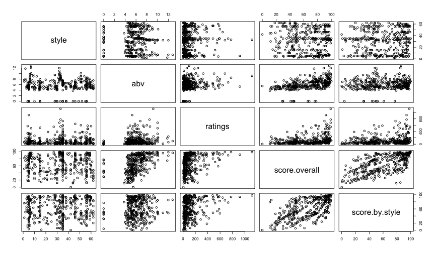
Get a better pairs plot
Look at the documentation for pairs() (then scroll down)
?pairs

Fancy pairs plot
Run the functions from the documentation file
panel.hist <- function(x, ...) {
usr <- par("usr"); on.exit(par(usr))
par(usr = c(usr[1:2], 0, 1.5) )
h <- hist(x, plot = FALSE)
breaks <- h$breaks; nB <- length(breaks)
y <- h$counts; y <- y/max(y)
rect(breaks[-nB], 0, breaks[-1], y, col = "cyan", ...)
}
panel.cor <- function(x, y, digits = 2, prefix = "", cex.cor, ...) {
usr <- par("usr"); on.exit(par(usr))
par(usr = c(0, 1, 0, 1))
r <- abs(cor(x, y, use = "complete.obs")) # I added the use part
txt <- format(c(r, 0.123456789), digits = digits)[1]
txt <- paste0(prefix, txt)
if(missing(cex.cor)) cex.cor <- 0.8/strwidth(txt)
text(0.5, 0.5, txt, cex = cex.cor * r)
}
pairs(d[ ,-c(1:2)],
lower.panel = panel.smooth,
diag.panel = panel.hist,
upper.panel = panel.cor)
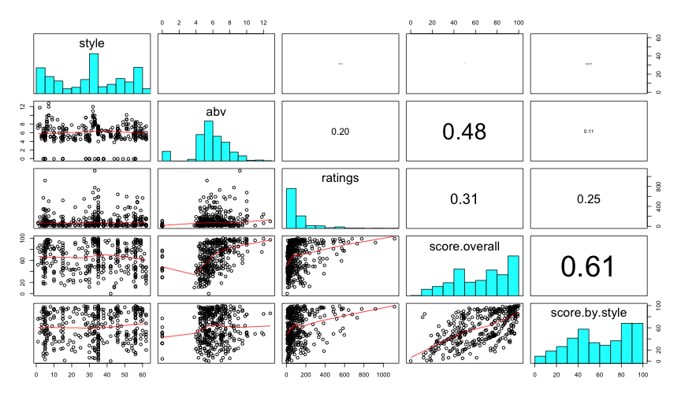
Exploring the relation between SES and Math Achievement
Individual Plots
hist(hsb$mathach)
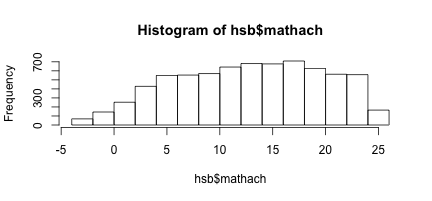
hist(hsb$ses)
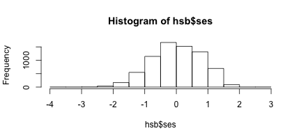
plot(hsb$ses, hsb$mathach)
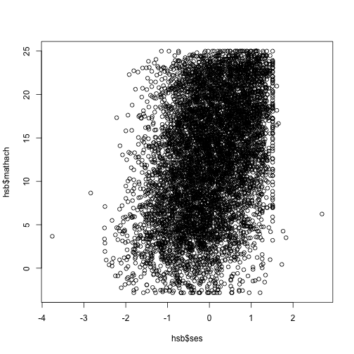
Correlation
Use the cor() function
cor(hsb$ses, hsb$mathach)
## [1] 0.3607556
And, as always, take a look at the documentation for cor()

Missing data
For illustration purposes, lets randomly make some cases missing, and then try to estimate the relation between the variables again
Randomly 10% of assign cases to missing
set.seed(1000) # For reproducibility
summary(hsb$ses)
## Min. 1st Qu. Median Mean 3rd Qu. Max.
## -3.758000 -0.538000 0.002000 0.000143 0.602000 2.692000
samp <- sample(c(0, 1), nrow(hsb), replace = TRUE, prob = c(.9, .1))
table(samp) / nrow(hsb)
## samp
## 0 1
## 0.90480167 0.09519833
hsb$ses[samp == 1] <- NA
summary(hsb$ses)
## Min. 1st Qu. Median Mean 3rd Qu. Max. NA's
## -3.7580 -0.5380 0.0020 0.0001 0.5920 2.6920 684
Correlation
cor(hsb$ses, hsb$mathach)
## [1] NA
This fails, because R doesn't know what to do with the missing data. Exclude those cases, and let's try again.
temp <- na.omit(hsb)
head(temp)
## SID ScID minority female ses mathach
## 1 100 1224 0 1 -1.528 5.876
## 2 108 1224 0 1 -0.588 19.708
## 3 116 1224 0 0 -0.528 20.349
## 4 124 1224 0 0 -0.668 8.781
## 5 132 1224 0 0 -0.158 17.898
## 6 140 1224 0 0 0.022 4.583
cor(temp$ses, temp$mathach)
## [1] 0.3608712
Alternatively, use the optional use argument
cor(hsb$ses, hsb$mathach,
use = "complete.obs")
## [1] 0.3608712
Modeling the relation between SES and Math
mHSB <- lm(mathach ~ ses, data = hsb)
display(mHSB, detail = TRUE)
## lm(formula = mathach ~ ses, data = hsb)
## coef.est coef.se t value Pr(>|t|)
## (Intercept) 12.79 0.08 160.77 0.00
## ses 3.21 0.10 31.19 0.00
## ---
## n = 6501, k = 2
## residual sd = 6.42, R-Squared = 0.13
Plot the relation and the model
# Plot the relation
plot(hsb$ses, hsb$mathach)
# Overlay the regression line
abline(mHSB, col = "blue", lty = 3, lwd = 2)
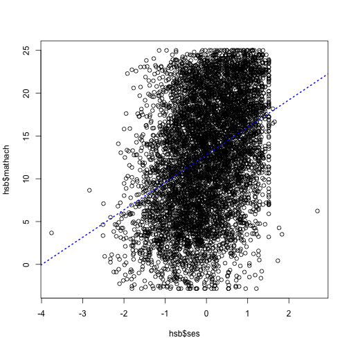
Fit the model for females and males separately
males <- lm(mathach ~ ses,
data = hsb, subset = female == 0)
display(males)
## lm(formula = mathach ~ ses, data = hsb, subset = female == 0)
## coef.est coef.se
## (Intercept) 13.55 0.12
## ses 3.01 0.16
## ---
## n = 3078, k = 2
## residual sd = 6.60, R-Squared = 0.11
Note the differences between the parameter estimates. Might we want to consider
an interaction?
females <- lm(mathach ~ ses,
data = hsb, subset = female == 1)
display(females)
## lm(formula = mathach ~ ses, data = hsb, subset = female == 1)
## coef.est coef.se
## (Intercept) 12.13 0.11
## ses 3.27 0.14
## ---
## n = 3423, k = 2
## residual sd = 6.18, R-Squared = 0.14
Plotting male and female models
male_d <- subset(hsb, female == 0)
plot(male_d$ses, male_d$mathach)
abline(males, col = "blue")
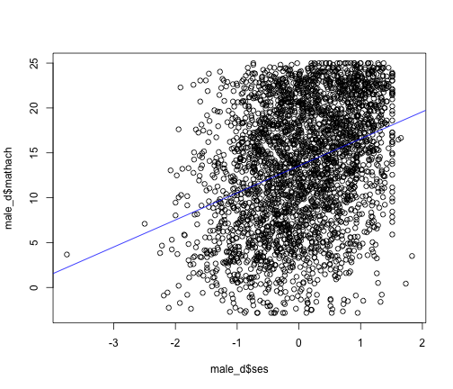
female_d <- subset(hsb, female == 0)
plot(female_d$ses, female_d$mathach)
abline(females, col = "red")
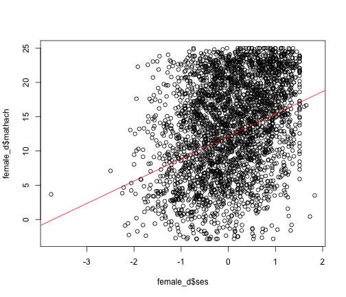
Model the interaction
Change female to a factor to help with plotting interpretability later
hsb$female <- factor(hsb$female, levels = c(0, 1), labels = c("Male", "Female"))
head(hsb)
## SID ScID minority female ses mathach
## 1 100 1224 0 Female -1.528 5.876
## 2 108 1224 0 Female -0.588 19.708
## 3 116 1224 0 Male -0.528 20.349
## 4 124 1224 0 Male -0.668 8.781
## 5 132 1224 0 Male -0.158 17.898
## 6 140 1224 0 Male 0.022 4.583
Model the interaction
Shortcuts:
int <- lm(mathach ~ ses*female, data = hsb)
expands to
int <- lm(mathach ~ ses + female + ses:female, data = hsb)
Note the importance of distinguishing between * and :.
Visualize the interaction
visreg(int, "ses", by = "female",
overlay = TRUE, partial = FALSE)
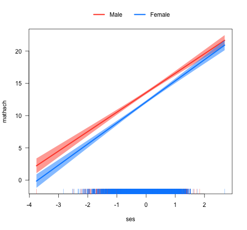
visreg(int, "ses", by = "female")
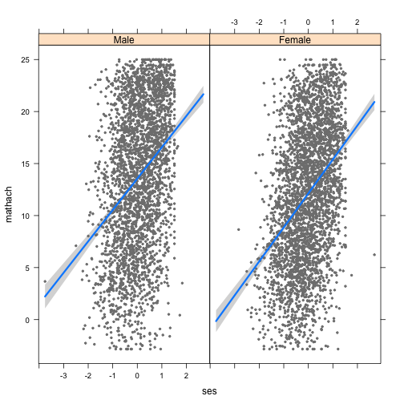
Evaluate coefficients
display(int, detail = TRUE)
## lm(formula = mathach ~ ses * female, data = hsb)
## coef.est coef.se t value Pr(>|t|)
## (Intercept) 13.55 0.12 117.58 0.00
## ses 3.01 0.15 20.10 0.00
## femaleFemale -1.42 0.16 -8.95 0.00
## ses:femaleFemale 0.25 0.21 1.23 0.22
## ---
## n = 6501, k = 4
## residual sd = 6.38, R-Squared = 0.14
Intercept variance between schools
library(lme4)
mlHSB <- lmer(mathach ~ ses + (1|ScID), data = hsb)
display(mlHSB)
## lmer(formula = mathach ~ ses + (1 | ScID), data = hsb)
## coef.est coef.se
## (Intercept) 12.71 0.19
## ses 2.44 0.11
##
## Error terms:
## Groups Name Std.Dev.
## ScID (Intercept) 2.15
## Residual 6.09
## ---
## number of obs: 6501, groups: ScID, 160
## AIC = 42242.8, DIC = 42226.7
## deviance = 42230.8
How did the results change?
coef(mHSB)
## (Intercept) ses
## 12.794598 3.207653
fixef(mlHSB)
## (Intercept) ses
## 12.709981 2.436065
Caterpillar plot
library(lattice)
qqmath(ranef(mlHSB, condVar = TRUE), strip = FALSE)$ScID
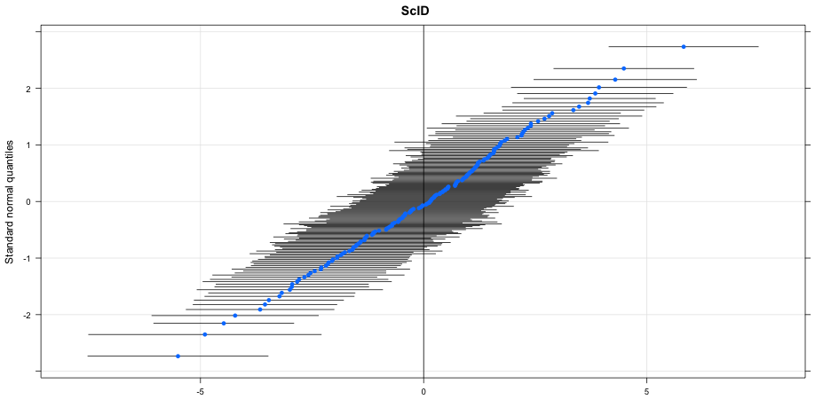
SES variability?
mlHSB2 <- lmer(mathach ~ ses + (ses|ScID), data = hsb)
display(mlHSB2)
## lmer(formula = mathach ~ ses + (ses | ScID), data = hsb)
## coef.est coef.se
## (Intercept) 12.72 0.19
## ses 2.44 0.12
##
## Error terms:
## Groups Name Std.Dev. Corr
## ScID (Intercept) 2.16
## ses 0.56 -0.14
## Residual 6.08
## ---
## number of obs: 6501, groups: ScID, 160
## AIC = 42244.3, DIC = 42224.5
## deviance = 42228.4
Compare competing models
anova(mlHSB, mlHSB2)
## refitting model(s) with ML (instead of REML)
## Data: hsb
## Models:
## mlHSB: mathach ~ ses + (1 | ScID)
## mlHSB2: mathach ~ ses + (ses | ScID)
## Df AIC BIC logLik deviance Chisq Chi Df Pr(>Chisq)
## mlHSB 4 42239 42266 -21115 42231
## mlHSB2 6 42240 42281 -21114 42228 2.3919 2 0.3024
qqmath(ranef(mlHSB2, condVar = TRUE))$ScID
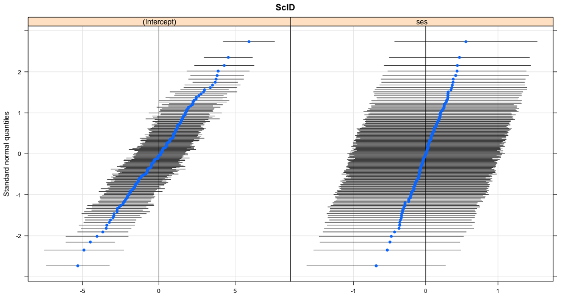
Practice
- Read in the data file ratebeer_beerjobber.txt
- Plot the relation between abv (x-axis) and score.overall (y-axis)
- Find the correlation between abv and score.overall
- Fit a simple linear regression model, with abv predicting score.overall
- Plot the relation between abv (x-axis) and score.overall (y-axis)
- Overlay the regression line on the scatterplot
- Fit a multilevel model with the intercept varying by brewer
Answers
Read in the data file ratebeer_beerjobber.txt
d <- read.delim("./data/ratebeer_beerjobber.txt")
head(d)
## name brewer
## 1 Abbey Monks Ale Abbey Beverage Company
## 2 Abbey Monks Tripel Abbey Beverage Company
## 3 Abbey Monks Wit Abbey Beverage Company
## 4 Alameda Barn Owl Imperial Brown Ale Alameda Brewing Co.
## 5 Alameda Black Bear XX Stout Alameda Brewing Co.
## 6 Alameda El Torero Organic IPA Alameda Brewing Co.
## style abv ratings score.overall score.by.style
## 1 Belgian Ale 5.2 96 50 49
## 2 Abbey Tripel 8.0 3 NA NA
## 3 Belgian White (Witbier) 5.1 46 23 19
## 4 Brown Ale 7.9 13 74 81
## 5 Foreign Stout 6.8 172 94 76
## 6 India Pale Ale (IPA) 7.2 56 74 43
Answers
Plot the relation between abv (x-axis) and score.overall (y-axis)
plot(score.overall ~ abv, data = d)
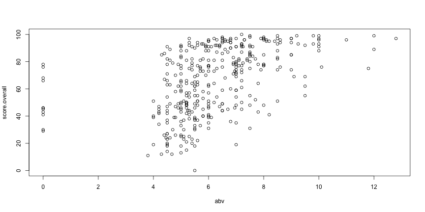
Answers (continued)
Find the correlation between abv and score.overall
cor(d$abv, d$score.overall, use = "complete.obs")
## [1] 0.4758994
Fit a simple linear regression model, with abv predicting score.overall
m2 <- lm(score.overall ~ abv, data = d)
display(m2)
## lm(formula = score.overall ~ abv, data = d)
## coef.est coef.se
## (Intercept) 27.97 3.83
## abv 6.17 0.60
## ---
## n = 367, k = 2
## residual sd = 21.33, R-Squared = 0.23
Answers (continued)
Overlay the regression line
plot(score.overall ~ abv, data = d)
abline(a = 27.97, b = 6.17, col = "blue")
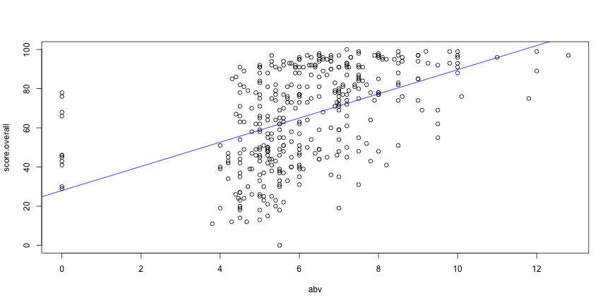
Multilevel model
byBrewer <- lmer(score.overall ~ abv + (1|brewer), data = d)
display(byBrewer)
## lmer(formula = score.overall ~ abv + (1 | brewer), data = d)
## coef.est coef.se
## (Intercept) 32.28 3.81
## abv 5.27 0.54
##
## Error terms:
## Groups Name Std.Dev.
## brewer (Intercept) 13.41
## Residual 17.43
## ---
## number of obs: 367, groups: brewer, 67
## AIC = 3230.9, DIC = 3230.4
## deviance = 3226.6